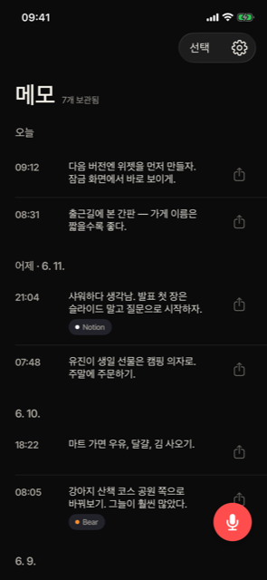

T·M
TALK · MEMO손이 바빠도 메모
좋은 생각이 떠올랐나요?
시계에 대고 말만 하세요
러닝 중
→
다음 버전엔 위젯부터 만들자
좋은 생각은 꼭 폰이 멀리 있을 때 떠오르죠. 달리는 중에, 운전 중에, 머리 감다가. Apple Watch를 한 번 탭하고 말하면 — iPhone을 집어 들 때쯤엔 이미 글자가 되어 있어요.
다운로드는App Store
한 번 결제 · 구독 없음 · iPhone & Apple Watch
NNotion
BBear
OObsidian
SSiri
